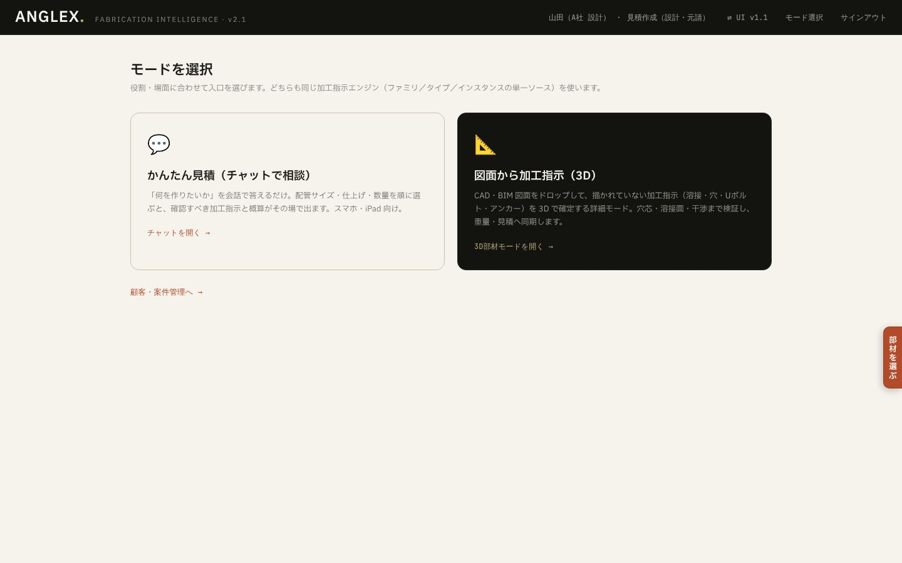
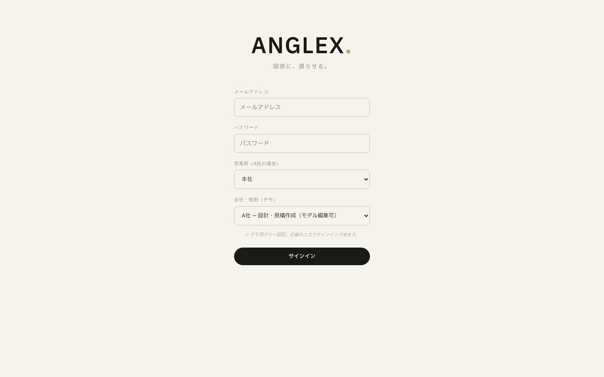
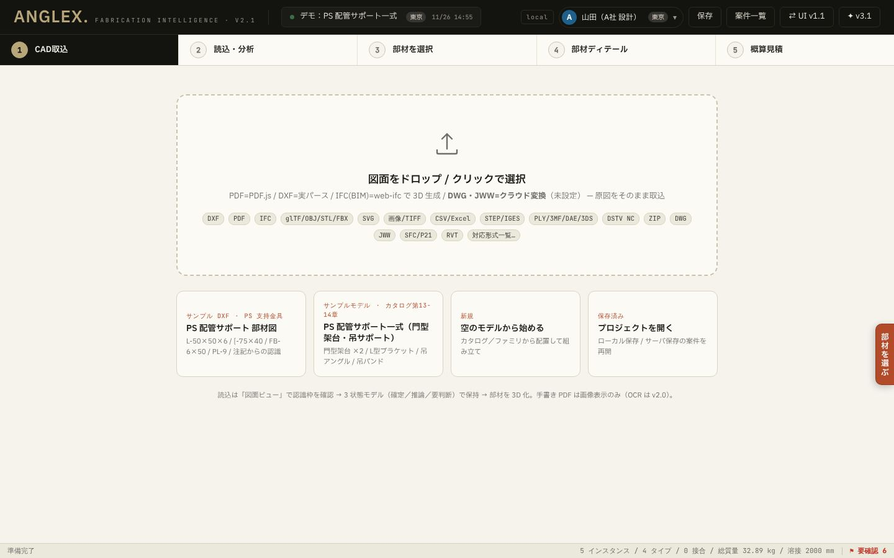
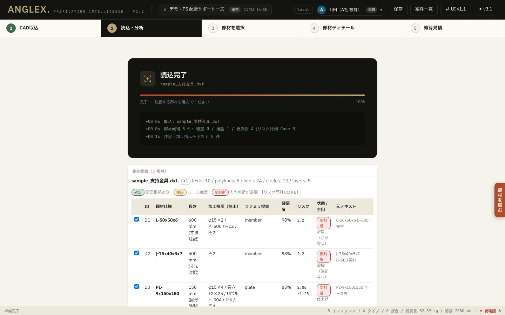
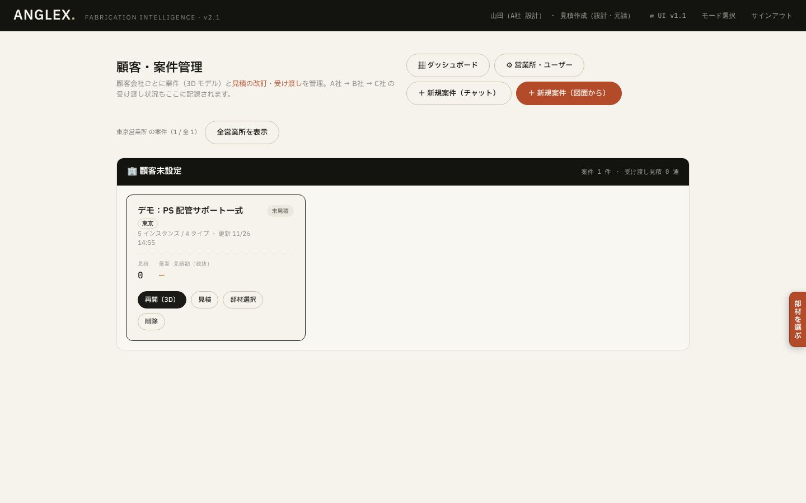
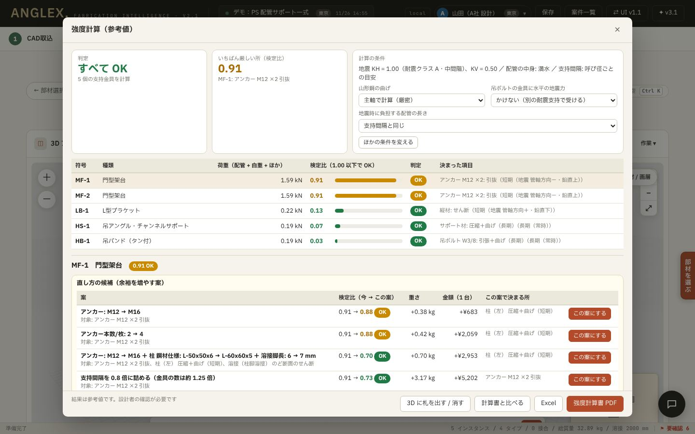
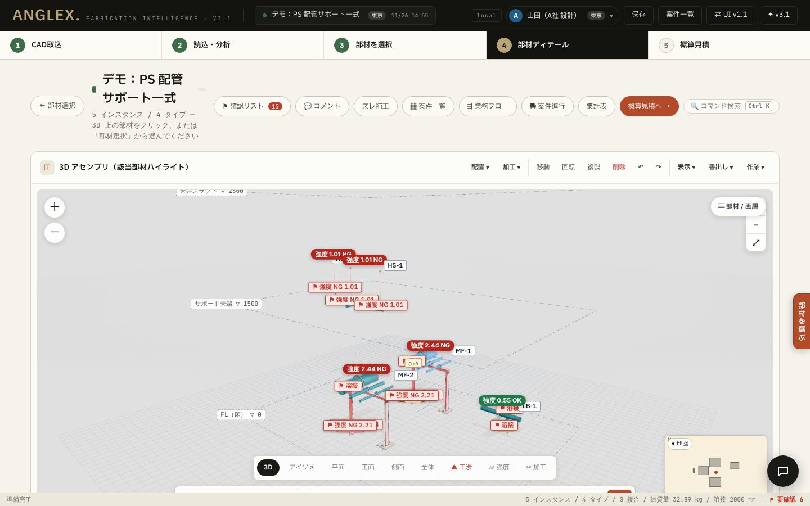
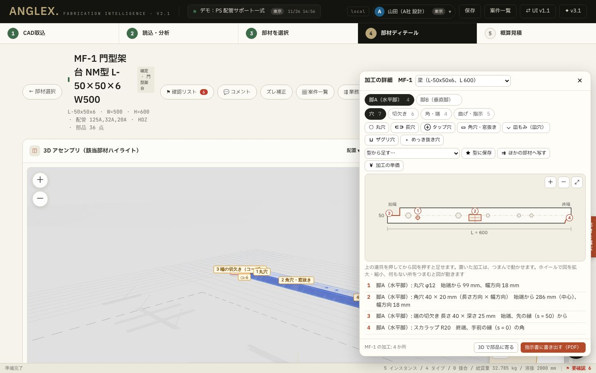
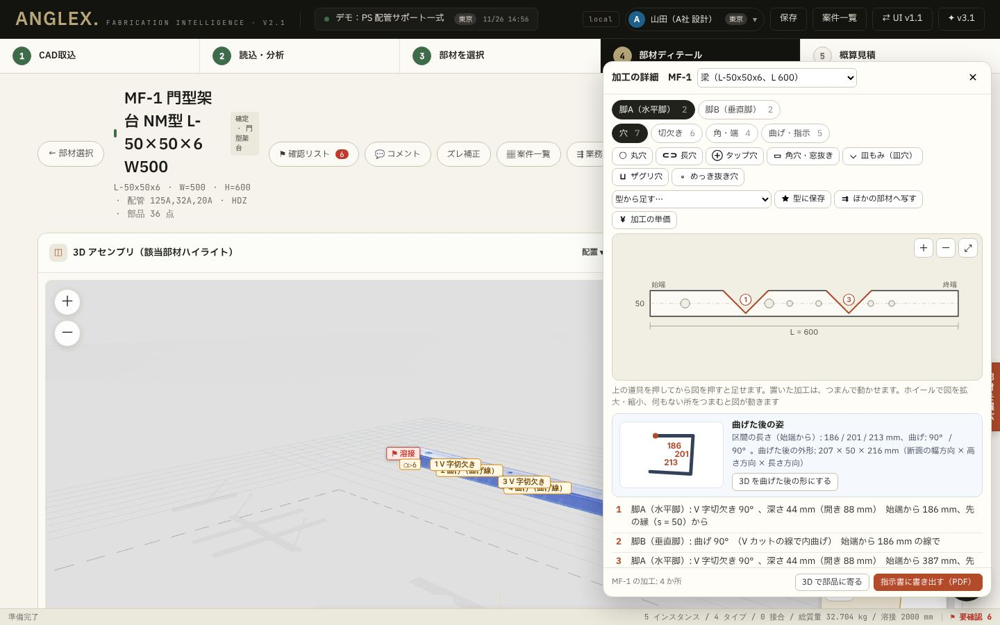
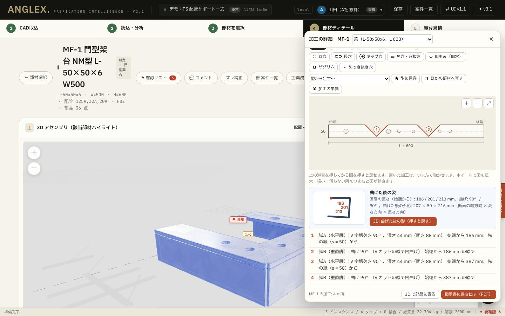

💬かんたん見積（会話）

1
2
3
1ANGLEX の質問に、ボタンを押して答える
2自由に書いてもよい
33D で確かめる
- ANGLEX の質問（何を作るか・配管のサイズ・仕上げ・数量）に、ボタンを押して答えます。 （写真の 1）
- 書いて答えてもかまいません。答え終わると、概算の金額が出ます。 （写真の 2）
- 「3D で確かめる」で、同じ内容を 3D で確かめて、細かく直せます。 （写真の 3）
v2 は、サインインして入口を選び、図面の読み込みから見積まで 5 つの手順で進む画面です。次に何をすればよいかが、いつも上の帯に出ています。












| キー・操作 | すること |
|---|---|
| Ctrl + K | やりたいことを探す |
| 左ドラッグ / 右ドラッグ / ホイール | 回す / 動かす / 寄る・引く |
| + / − | 寄る / 引く（3D の右上のボタンでも） |
| クリック / ダブルクリック | 部材を選んで中央へ / 大きく寄る |
| Esc | 全体を見る |
| G / R | 動かす / 回す |
| Delete | 消す |
| Ctrl + Z / Ctrl + Y | 元に戻す / やり直す |
| K | コメントの一覧 |
| ? | ショートカットの一覧 |
| こんなとき | こうしてください |
|---|---|
| 画面が開かない・3D が出ない | Chrome か Edge の最近の版で開いてください。Web 版はインターネットにつながっている必要があります（3D の部品を読み込むため）。つながらない場所では、オフライン版（ANGLEX_v1_offline.html など）を使ってください。 |
| 作ったデータはどこに保存される？ | お使いのブラウザの中に自動で保存されます。別の PC やブラウザには引き継がれません。持ち運ぶときは、案件を書き出して（プロジェクト JSON）、相手の画面で読み込みます。 |
| 動きが重い | 見え方を軽くしてください（v1・v2 は「高品質」と「影」を切る、v3 は「見え方」で「形を見やすく」）。部材が多いときは、断面ボックスや分解で見る範囲をしぼると軽くなります。 |
| 間違えて消した・変えた | 「元に戻す」（Ctrl + Z）で 1 つずつ戻せます。「やり直す」は Ctrl + Y です。 |
| 金額や納期は正しい？ | 重量・金額・納期は参考値です。単価・工場・標準日数はサンプルの値で、導入先の値に置き換える前提です。 |
| どの画面を使えばいい？ | はじめての方は v3（画面が静かで、触って直せる）。図面から順に進めたい方は v2（5 つの手順）。すべての機能を一画面で使いたい方は v1（リボン型）。3 つとも同じデータを扱い、いつでも切り替えられます。 |